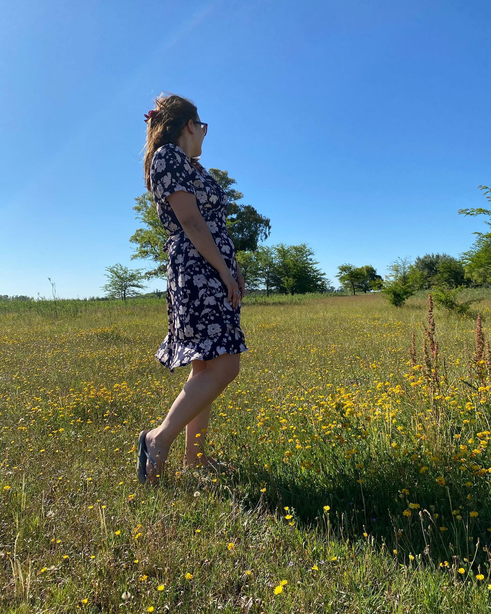
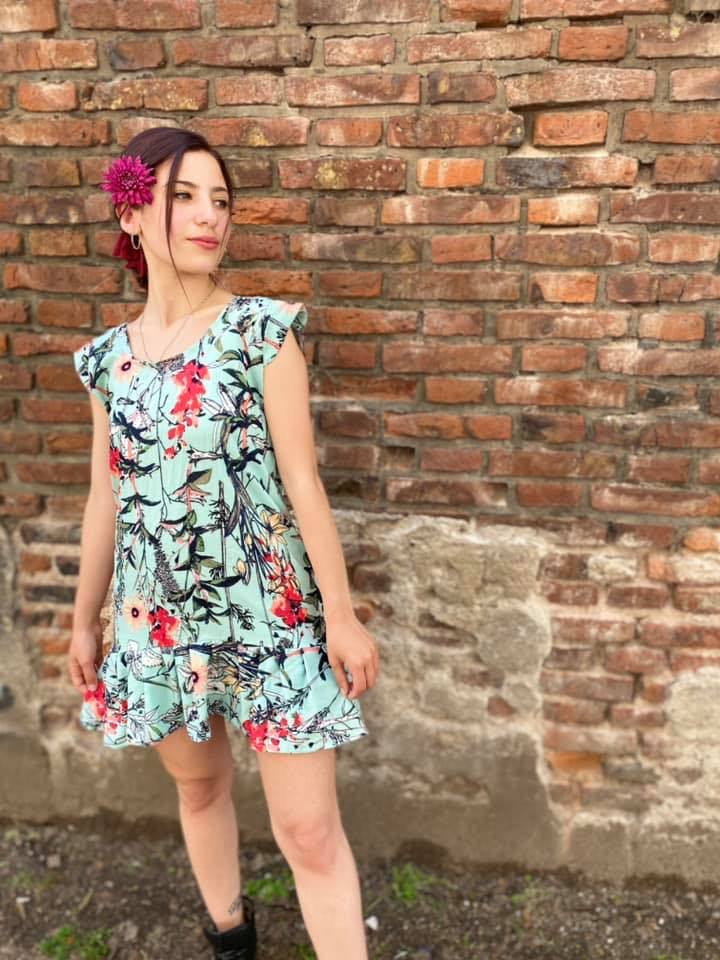

Vestidos
Variedad de vestidos largos y cortos. Disenos unicos para vos.


‘Stay beautiful and blooming' 'Mantente bella y florece'
Soy Meli, profe de inglés que tengo un hobby: sentarme horas a dibujar, cortar y coser. Arranque con una maquina familiar chiquita, fui sumando mi amada overlock, clases de costura y la gran ayuda de mi abuela Celina, ayudante de sastre, quien me da su opinion, consejos y criticas. Y con la ayuda de mi hermana Gabriela, quien se presta para las fotos. Aunque no lo crean, es mi tercer hermana.
Bienvenidos a Paulette.
Vestidos
Variedad de vestidos largos y cortos. Disenos unicos para vos.
Kimonos
Variedad de disenos.